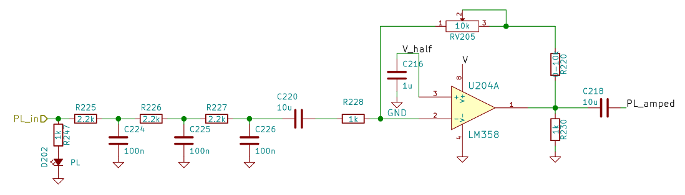

Our homebrew repeaters consist of two commercial radios, a duplexer, a power supply and a homebrew controller. The controller itself consists of two PCBs which plug into a backplane. One PCB is the logic board. It decides when to key up the transmitter, when to issue automatic repeater IDs and many more things that are within the realm of the controller logic. The second PCB is the audio board. Among other things, it is responsible for filtering the audio from the receiver before it is sent back to the transmitter, summing up this audio with the CW tone, controlling an mp3 module for the automatic voice ID and synthesizing the PL/CTCSS tone which is also added to the audio sent to the transmitter.
In order to perform these tasks, an auxiliary PIC16F722A [datasheet] microcontroller is used. This chip is strapped to the I2C bus, available at the backplane, to receive commands from the logic PCB. In particular, the following features are implemented:
The first feature is arguably the most interesting aspect of this solution. The second feature is used to control the ELV MSM 2 mp3 module and the third feature is used to mute audio paths by grounding them through a MOSFET. It is possible to use the software published on this site for the DDS only, ignoring or disabling the remaining features.
We are powering the microcontroller from a 5 V rail, although operation on
a 3.3 V level is equally possible. Naturally this will result in a lower
DDS output level. The 7-bit I2C address is set to 0x39, but can be
easily changed in the code. While the internal 16 MHz oscillator can be
used, we added an external 16 MHz crystal oscillator to mitigate drift
originating from temperature changes which are quite significant at some
repeater sites. If you want to use the internal oscillator instead, you have
to change #pragma config FOSC in the config_bits.h
file.
The working principle of a DDS is explained in quite some detail in this video. Instead of an R2R ladder, a PWM output is used in the solution described here. The following figure illustrates this concept.
The top plot shows the sinewave that is to be synthesized. The little red dots are the sampling points; they correspond to the period of the square wave in the second plot. The duty cycle of the square wave is altered such that the average over a period equals the sampled value, i.e. the red dot in the top plot. The averaging is performed by a reconstruction filter which is discussed below.
The following table summarizes the characteristics of our DDS:
| DDS clock | 15625 Hz |
| PWM resolution | 8 bits |
| LUT size | 256 bytes |
| LUT width | 8 bits |
| Frequency resolution | approx. 238.4 mHz |
| Worst absolute CTCSS frequency error | 0.118 Hz (at 114.8 Hz) |
| Worst relative CTCSS frequency error | 0.142 % (at 71.9 Hz) |
Last but not least, modifying the source code to support additional frequencies is trivial: The phase increment can be computed by dividing the desired output frequency by the DDS frequency resolution. The frequency resolution in Hz is ; the phase increment is therefore .
A passive RC filter is used in our design to integrate the square wave into a sine wave. Some more considerations with respect to the filtering of DDS and PWM signals can be found in this video.
Our filter is shown below, although it must be said that there might be better approaches to this than what is depicted. Then again, this solution fully satisfies our needs.
As this is not a split-supply design, V_half is the half-rail
voltage generated by another OpAmp. R220 can be used to further
increase the gain of the inverting amplifier that follows the filter. We
designed this in just in case, but populated the footprint with a 0 Ohm
jumper. Using an inverting amplifier here allows for the option of negative
gain. The purpose of R230 is just to improve the cross-over
distortion behaviour of the good old LM324 and can be omitted
if a better OpAmp is used.
In addition to averaging out the pulses, it is this filter's job to reject unwanted nyquist images. Those images will appear close to the sampling frequency of 15625 Hz, hence the requirements on the filter in this regard are fairly low. If necessary, the passive filter could be optimized such that the later stages impose less loading on the early stages. Probably the number of stages can be reduced anyway. An active filter could be used instead (e.g. a Sallen-Key filter), but it is generally a bad idea to introduce gain there. A second OpAmp would be needed as a consequence.
The following table shows all the commands that are understood by the
aux_pic. The microcontroller acts as an I2C slave and expects one
command byte after the address. Hence, the I2C transaction executed by the I2C
master is:
| Command Byte | Description |
|---|---|
0b0xxxxxxx | Set PL tone. See the table below as well as
pl_tone_t_enum.h for a list of supported PL tones and
their corresponding command byte. The PWM waveform is available on pin RC2. |
0b10000001 | Momentarily set pin RA0 HIGH. |
0b10000010 | Momentarily set pin RA1 HIGH. |
0b10000011 | Momentarily set pin RA2 HIGH. |
0b10000100 | Momentarily set pin RA3 HIGH. |
0b10000101 | Momentarily set pin RA4 HIGH. |
0b10000110 | Momentarily set pin RB1 HIGH. |
0b10000111 | Momentarily set pin RB2 HIGH. |
0b10001000 | Momentarily set pin RB3 HIGH. |
0b10001001 | Momentarily set pin RB4 HIGH. |
0b10001010 | Momentarily set pin RB5 HIGH. |
0b11000000 | Set pin RC6 LOW. |
0b11000001 | Set pin RC6 HIGH. |
0b11000010 | Set pin RC5 LOW. |
0b11000011 | Set pin RC5 HIGH. |
The following table shows the pre-programmed output frequencies along with their
I2C command bytes, the macros defined in pl_tone_t_enum.h as well
as the actual output frequencies along with errors. These are calculated figures
of the DDS alone. Errors from the reference clock are not accounted for.
| Macro | Command Byte | Desired Frequency | Actual Frequency | Absolute Error | Relative Error |
|---|---|---|---|---|---|
| PL_NONE | 0b00000000 | off | off | - | - |
| PL_0670 | 0b00000001 | 67.0 Hz | 66.996 Hz | 0.004 Hz | 0.007% |
| PL_0719 | 0b00000010 | 71.9 Hz | 72.002 Hz | -0.102 Hz | -0.142% |
| PL_0744 | 0b00000011 | 74.4 Hz | 74.387 Hz | 0.013 Hz | 0.018% |
| PL_0770 | 0b00000100 | 77.0 Hz | 77.009 Hz | -0.009 Hz | -0.012% |
| PL_0797 | 0b00000101 | 79.7 Hz | 79.632 Hz | 0.068 Hz | 0.086% |
| PL_0825 | 0b00000110 | 82.5 Hz | 82.493 Hz | 0.007 Hz | 0.009% |
| PL_0854 | 0b00000111 | 85.4 Hz | 85.354 Hz | 0.046 Hz | 0.054% |
| PL_0885 | 0b00001000 | 88.5 Hz | 88.453 Hz | 0.047 Hz | 0.053% |
| PL_0915 | 0b00001001 | 91.5 Hz | 91.553 Hz | -0.053 Hz | -0.058% |
| PL_0948 | 0b00001010 | 94.8 Hz | 94.891 Hz | -0.091 Hz | -0.096% |
| PL_0974 | 0b00001011 | 97.4 Hz | 97.513 Hz | -0.113 Hz | -0.116% |
| PL_1000 | 0b00001100 | 100.0 Hz | 99.897 Hz | 0.103 Hz | 0.103% |
| PL_1035 | 0b00001101 | 103.5 Hz | 103.474 Hz | 0.026 Hz | 0.025% |
| PL_1072 | 0b00001110 | 107.2 Hz | 107.288 Hz | -0.088 Hz | -0.082% |
| PL_1109 | 0b00001111 | 110.9 Hz | 110.865 Hz | 0.035 Hz | 0.032% |
| PL_1148 | 0b00010000 | 114.8 Hz | 114.918 Hz | -0.118 Hz | -0.103% |
| PL_1188 | 0b00010001 | 118.8 Hz | 118.732 Hz | 0.068 Hz | 0.057% |
| PL_1230 | 0b00010010 | 123.0 Hz | 123.024 Hz | -0.024 Hz | -0.020% |
| PL_1273 | 0b00010011 | 127.3 Hz | 127.316 Hz | -0.016 Hz | -0.012% |
| PL_1318 | 0b00010100 | 131.8 Hz | 131.845 Hz | -0.045 Hz | -0.035% |
| PL_1365 | 0b00010101 | 136.5 Hz | 136.614 Hz | -0.114 Hz | -0.083% |
| PL_1413 | 0b00010110 | 141.3 Hz | 141.382 Hz | -0.082 Hz | -0.058% |
| PL_1462 | 0b00010111 | 146.2 Hz | 146.151 Hz | 0.049 Hz | 0.034% |
| PL_1514 | 0b00011000 | 151.4 Hz | 151.396 Hz | 0.004 Hz | 0.003% |
| PL_1567 | 0b00011001 | 156.7 Hz | 156.641 Hz | 0.059 Hz | 0.038% |
| PL_1622 | 0b00011010 | 162.2 Hz | 162.125 Hz | 0.075 Hz | 0.046% |
| PL_1679 | 0b00011011 | 167.9 Hz | 167.847 Hz | 0.053 Hz | 0.032% |
| PL_1738 | 0b00011100 | 173.8 Hz | 173.807 Hz | -0.007 Hz | -0.004% |
| PL_1799 | 0b00011101 | 179.9 Hz | 180.006 Hz | -0.106 Hz | -0.059% |
| PL_1862 | 0b00011110 | 186.2 Hz | 186.205 Hz | -0.005 Hz | -0.003% |
| PL_1928 | 0b00011111 | 192.8 Hz | 192.881 Hz | -0.081 Hz | -0.042% |
| PL_2035 | 0b00100000 | 203.5 Hz | 203.609 Hz | -0.109 Hz | -0.054% |
| PL_2065 | 0b00100001 | 206.5 Hz | 206.470 Hz | 0.030 Hz | 0.014% |
| PL_2107 | 0b00100010 | 210.7 Hz | 210.762 Hz | -0.062 Hz | -0.029% |
| PL_2181 | 0b00100011 | 218.1 Hz | 218.153 Hz | -0.053 Hz | -0.024% |
| PL_2257 | 0b00100100 | 225.7 Hz | 225.782 Hz | -0.082 Hz | -0.037% |
| PL_2336 | 0b00100101 | 233.6 Hz | 233.650 Hz | -0.050 Hz | -0.021% |
| PL_2418 | 0b00100110 | 241.8 Hz | 241.756 Hz | 0.044 Hz | 0.018% |
| PL_2503 | 0b00100111 | 250.3 Hz | 250.340 Hz | -0.040 Hz | -0.016% |
The project ist released on a github page under the GNU GPL 2 license. The code is written in C using MPLAB X (version 3.05) and builds with the MPLAB XC8 compiler.